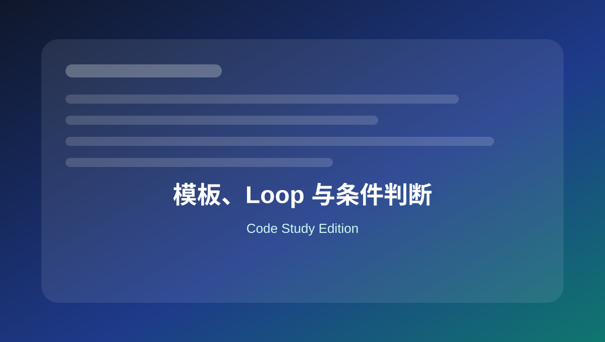

03 模板、Loop 与条件判断
掌握模板输出、主循环、自定义查询、条件标签和模板片段。

本页关键词
The Loop
WP_Query
get_template_part
is_page
template hierarchy
学习目标
- 会写基础 Loop
- 会写自定义 WP_Query
- 会用条件标签控制页面逻辑
- 会拆分模板片段
代码使用提醒
本页代码适合用于学习和研究。复制到正式网站前，请先备份，并优先在测试环境验证。
涉及用户输入、后台保存、接口请求、删除操作和邮件发送时，要同时考虑权限、nonce、sanitize、validate 和 escape。
1. 标准 Loop 输出文章
基础
<?php if ( have_posts() ) : ?>
<?php while ( have_posts() ) : the_post(); ?>
<article <?php post_class(); ?>>
<h2><?php the_title(); ?></h2>
<div><?php the_excerpt(); ?></div>
</article>
<?php endwhile; ?>
<?php else : ?>
<p>暂无内容。</p>
<?php endif; ?>
主循环用于输出当前页面查询结果。
2. 自定义 WP_Query 输出 3 篇文章
基础
<?php
$query = new WP_Query( array(
'post_type' => 'post',
'posts_per_page' => 3,
'post_status' => 'publish',
) );
if ( $query->have_posts() ) :
while ( $query->have_posts() ) :
$query->the_post();
the_title( '<h3>', '</h3>' );
endwhile;
wp_reset_postdata();
endif;
自定义查询结束后必须 wp_reset_postdata()。
3. 按分类 slug 查询文章
实用
<?php
$news = new WP_Query( array(
'category_name' => 'company-news',
'posts_per_page' => 6,
) );
category_name 使用分类 slug，不是分类显示名称。
4. 条件判断：不同页面输出不同内容
实用
<?php
if ( is_front_page() ) {
echo '<p>这里是首页。</p>';
} elseif ( is_page( 'contact' ) ) {
echo '<p>这里是联系页面。</p>';
} elseif ( is_single() ) {
echo '<p>这里是文章详情页。</p>';
}
条件标签适合控制模板中的局部差异。
5. 拆分模板：get_template_part
实用
<?php
// 加载 template-parts/card-product.php
get_template_part( 'template-parts/card', 'product' );
// 传递参数，WordPress 5.5+ 支持 args
get_template_part( 'template-parts/card', 'product', array(
'label' => 'Featured',
) );
模板片段可以提高复用性，减少重复代码。
6. 模板中安全输出自定义字段
安全
<?php
$subtitle = get_post_meta( get_the_ID(), '_subtitle', true );
if ( $subtitle ) {
echo '<p class="subtitle">' . esc_html( $subtitle ) . '</p>';
}
从数据库取出的内容也要根据输出位置进行转义。
本页总结
模板开发的核心是 Loop、WP_Query、条件标签和模板拆分。掌握这些后，就能改造多数 WordPress 前台结构。